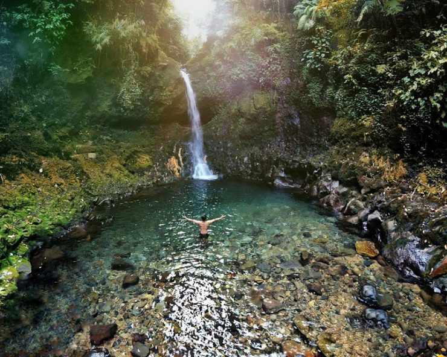

Beautiful Forest, Clear Skies-Why Nature
Are One of the Many Wonders of Indonesia
Allow us to make the argument that any season—not only summer—is the ideal time to explore Indonesia's Nature. The climate allow us to have almost a perfect wather to do outdoor activities almost everyday and that gives you wide horizons, geological wonders, and perfect situation to go explore natural wonders of Indonesia. Here we outline some of the best ways to explore.
Splash Around in these Beautiful Waterfall

Still suffering through lingering heat waves? Cool off in Mother Nature's water park. These spots were made for swimming, kayaking, and blissed-out floating
test
129830123
Bali
Bali is the most popular tourist destination on this earth. Most honeymoon tourists and holiday travelers will be many you will meet who visit this island.
Bali is famous for its dance and culture, traditional music, many carvings, paintings, leather crafts and metalworking are quite popular.
The rapid growth of development in the field of tourism to date has a great impact and influence on the traditions and lifestyles of Balinese people and those on this island.
Interestingly, Balinese culture is still what it is, growing along with globalization. Another thing that can be the answer to preserving Balinese culture is the vision of the Balinese people who inspire every soul to love and glorify their own culture without having to be ashamed.
Offcanvas right
...
Danau Toba
According to history, Lake Toba was previously a volcano called Mount Toba. Information quoted from sejarahlengkap.com mentioned, this mountain has a very large magma pocket that if erupted will produce a very high explosive power.
The magma pockets of Mount Toba are supplied by the abundance of melt a number of melts of a hyperactive continental plate, namely the Indo-Australian plate that contains a lot of sediment, and the Eurasian plate that seats sumatra island. The location of the two plates is at a depth of 150 km below the earth.
Friction of the Indo-Australian and Eurasian plates generates heat so that it melts the rocks. The melt then rises to the top as magma. Because of the frequent rubbing of these two plates, the magma produced is large enough to create such a powerful explosion.
test
129830123
Taman Nasional Way Kambas – Lampung
Lampung is indeed one of the right tourist destinations for those of you who want to see the captivity of this large mammal. Way Kambas National Park is located in East Labuhan District, Lampung. This tourist spot, which is managed by the Ministry of Forestry, was first built in 1985 and is the first elephant school in Indonesia. Apart from being a place for elephant conservation and training, TNWK also has the International Rhino Foundation which functions as a rhino breeding place from extinction. To be able to enter here, you will only be charged an entrance ticket of Rp. 30,000 per person.
Offcanvas right
...
Taman Nasional Bromo Tengger Semeru – Jawa Timur
Bromo Tengger Semeru National Park? This tourist spot in the form of a national park located in 4 districts in East Java itself has many interesting objects that should not be missed, ranging from Mount Bromo and Semeru, a sea of sand, Whispering Beach, Madakaripura Waterfall, Ranu Pane, Ranu Kumbolo, and others. others are all beautiful. Access to TNBTS is fairly easy, you just need to follow the route to Mount Bromo. Although the road is quite extreme, all will be paid off completely when you arrive at the location.